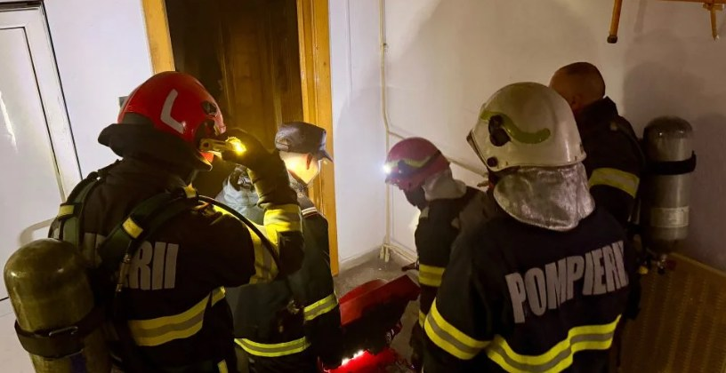

Momente de tensiune în municipiul Drobeta-Turnu Severin, unde pompierii au intervenit de urgență într-un apartament situat la parterul unui bloc de locuințe. Alarma s-a dat pe strada Mareșal Averescu, la intersecția cu strada Smârdan.
Potrivit primelor informații, exista suspiciunea că o persoană s-ar putea afla în interiorul locuinței, cuprinsă de fum dens.
Două autospeciale de stingere și un echipaj de ambulanță
La fața locului au fost mobilizate forțe din cadrul Detașamentului de Pompieri Drobeta-Turnu Severin, care au acționat cu două autospeciale de stingere. De asemenea, un echipaj al Serviciului de Ambulanță Județean Mehedinți a intervenit pentru acordarea asistenței medicale.
Pompierii au intrat în apartament echipați cu aparate de respirat, pentru a căuta eventuale victime în spațiul plin de fum.

Victima, găsită inconștientă, cu arsuri
În timpul operațiunilor de căutare și salvare, pompierii au descoperit în interiorul apartamentului o persoană în stare de inconștiență, care prezenta arsuri pe mai multe zone ale corpului.
Din păcate, în ciuda intervenției echipajelor de salvare, a fost constatat decesul victimei.
🚨 Pe scurt – intervenția din Drobeta-Turnu Severin
Unde: apartament la parterul unui bloc, str. Mareșal Averescu / intersecția cu str. Smârdan, Drobeta-Turnu Severin
Ce s-a întâmplat: fum dens în locuință, suspiciunea că o persoană se afla înăuntru
Cine a intervenit: Detașamentul de Pompieri Drobeta-Turnu Severin (2 autospeciale de stingere) și SAJ Mehedinți
Bilanț: o persoană găsită inconștientă, cu arsuri; decesul a fost constatat
Cum vă protejați locuința de incendii
Sezonul rece este, de regulă, perioada cu cele mai multe incendii la locuințe, pe fondul folosirii sobelor, a aparatelor electrice de încălzire și a instalațiilor suprasolicitate. Pompierii recomandă câteva reguli simple:
- nu lăsați nesupravegheate aparatele de încălzire, aragazul sau lumânările aprinse;
- nu suprasolicitați prizele și prelungitoarele și nu folosiți instalații electrice improvizate sau deteriorate;
- nu fumați în pat și nu aruncați resturi de țigară nestinse;
- montați un detector de fum – un dispozitiv ieftin, care poate da alarma la timp, mai ales noaptea;
- acordați atenție vecinilor în vârstă sau care locuiesc singuri.
Dacă observați fum sau foc într-un apartament, sunați imediat la 112, nu intrați singuri în spațiul plin de fum și, dacă e posibil, alertați vecinii și evacuați scara blocului.
Urmăriți secțiunea Cronica Neagră de pe MehedintiAzi.ro și pagina de Facebook Mehedinți Azi pentru actualizări.
Redactia MehedintiAzi.ro